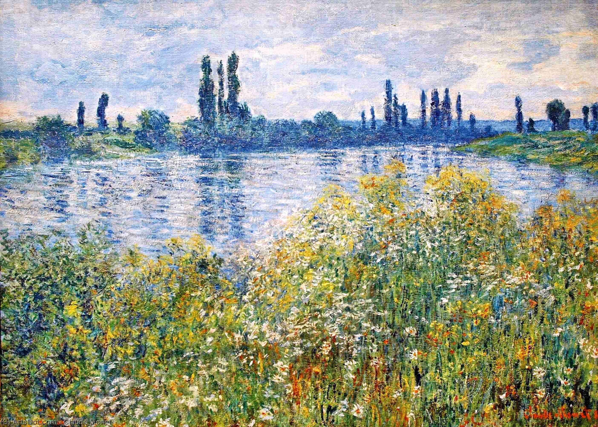

Empresyonizm Nedir?
Empresyonizm, 19. yüzyılın sonlarında Fransa'da ortaya çıkan ve doğanın izlenimlerinin hızlı bir şekilde, genellikle dış mekanlarda (plein air) resmedilmesiyle karakterize edilen bir sanat akımıdır. Empresyonistler, ışık ve renk oyunlarına büyük önem vererek, nesnelerin detayları yerine anlık izlenimlerini yansıtmaya çalışmışlardır. Bu akım, sanatta gerçekçiliği ve ayrıntıyı terk edip, anlık duyguları ve atmosferi ön plana çıkarmıştır. Claude Monet, Edgar Degas, Pierre-Auguste Renoir gibi sanatçılar, empresyonizmin en önemli temsilcilerindendir.
